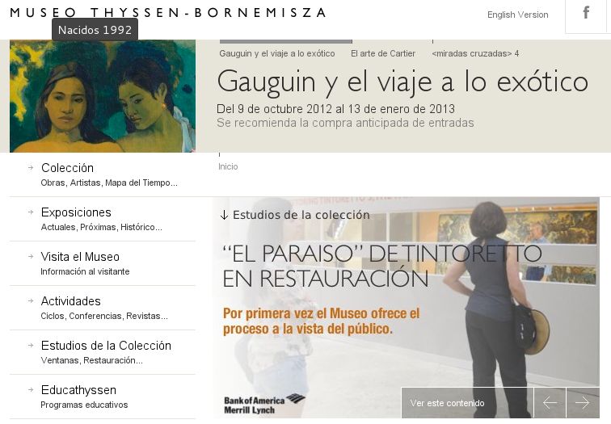
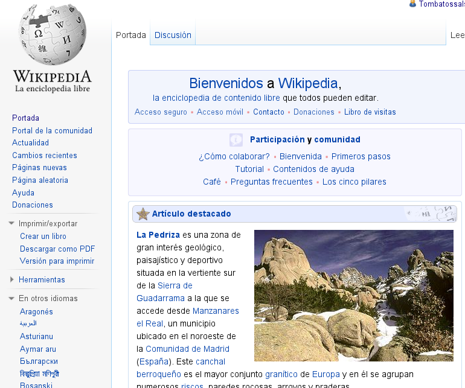
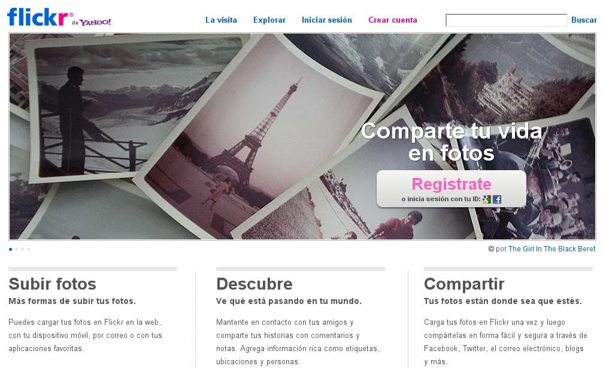

1. Introducción
La práctica de hoy consistirá en continuar nuestro descubrimiento de la web visitando una serie de páginas seleccionadas. Y es que la única manera de dominar la navegación web es navegando por páginas y páginas.
2. Página web de Renfe.
Me gustaría consultar el precio de un billete de AVE de Valencia a Madrid, para el día 22 de Diciembre de este año. ¿Sabríais decirme cuánto me costaría?
3. Página web del museo Thyssen.
¿Sabrías encontrar alguno de los cuadros de Dalí ubicados en el museo Thyssen?
4. Wikipedia.
Wikipedia es la enciclopedia libre de referencia en Internet. Una de las fuentes de conocimiento más grandes del mundo. Encuentra el artículo de la Wikipedia española que habla sobre el cuadro Las meninas de Velazquez.
5. Flickr.
Para terminar la sesión de hoy, me gustaría que visitaráis esta web de fotografía. Busca e intenta encontrar fotos de vuestra ciudad/pueblo publicadas por otros usuarios.